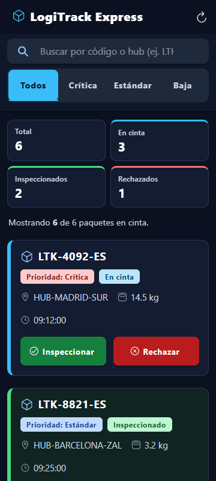
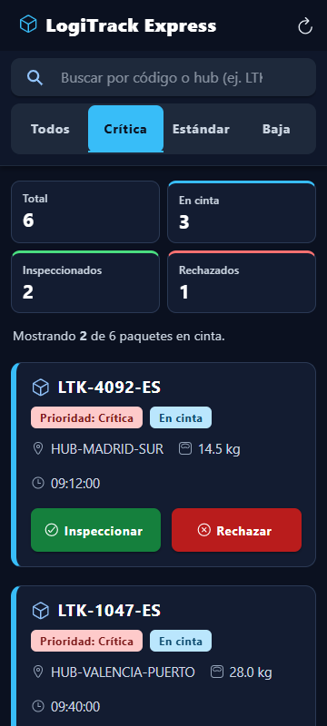
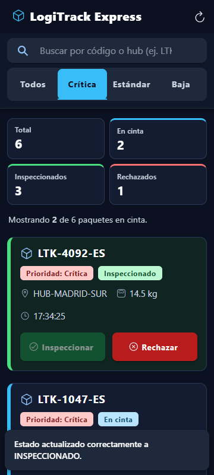
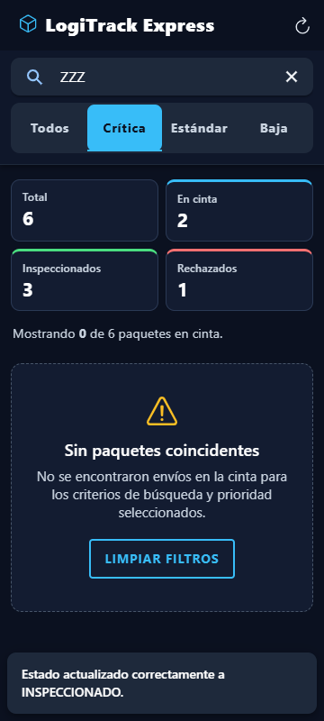
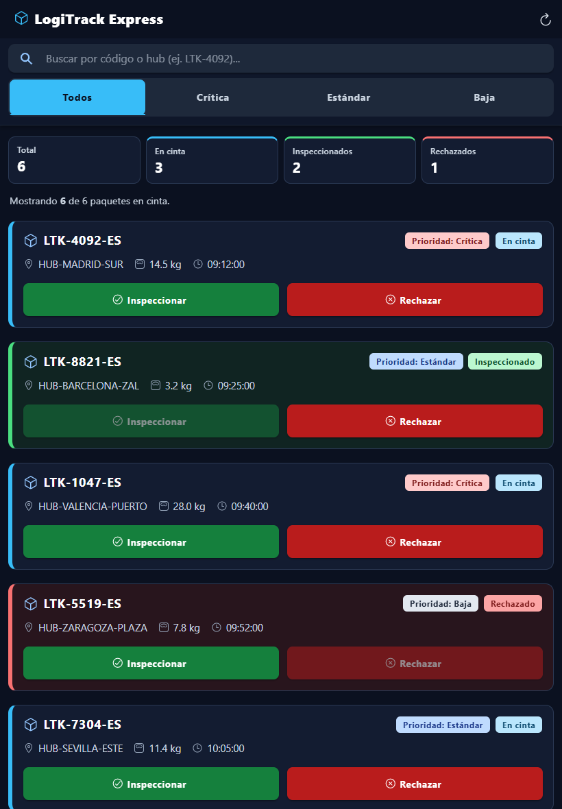
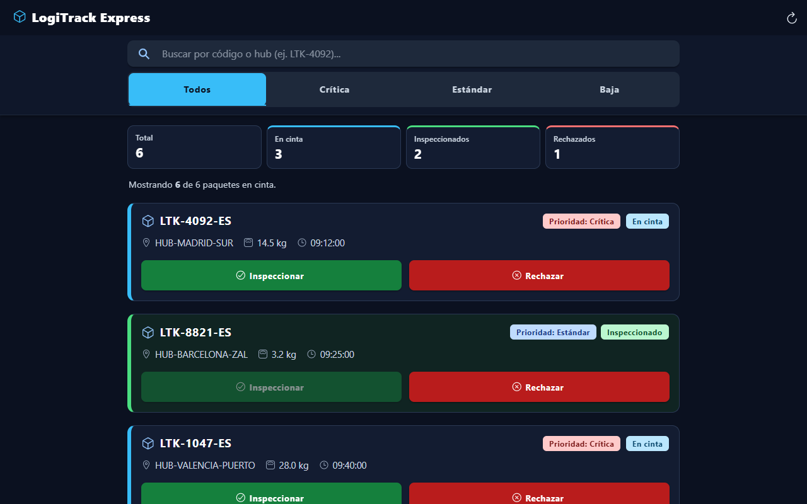

| Despliegue (Vercel) | https://logitrack-express.vercel.app |
| Repositorio | https://github.com/clax-dev/DI-logitrack-express |
| Stack | Angular 19 (standalone, sin NgModule) · Ionic 8 · TypeScript estricto · Signals · Angular CLI (esbuild) |
Terminal móvil/tablet para los operarios de un almacén: ven los paquetes que pasan por la cinta, los buscan por código o hub, los filtran por prioridad y los marcan como inspeccionados o rechazados, con botones o con gesto de deslizar. Se usa en naves con poca luz y con guantes, por eso el tema es oscuro de alto contraste y los botones son grandes.
main.ts ─► bootstrapApplication(AppComponent, provideIonicAngular + provideRouter)
└─► /home (lazy, loadComponent) ─► HomePage ← filtros, toast, orquesta
├─ PackageCardComponent input.required / output
└─ PackageService (inject) signal privado + computed
models/package.model.ts → tipos de dominio (WarehousePackage, PackageStatus, PackageStatusChangeEvent)
Flujo unidireccional: el estado de los paquetes vive solo en PackageService, como un signal privado (#packages) que se expone en modo lectura (asReadonly()). HomePage deriva la lista filtrada con computed() y se la pasa a cada tarjeta por input. La tarjeta no conoce el servicio: emite un output con {id, newStatus} y la Home llama a updatePackageStatus(), que crea una lista nueva (inmutabilidad) en vez de modificar la existente.
| Tarea | Qué se ha hecho | Por qué / alternativa descartada |
|---|---|---|
| 1. Andamiaje y modelo | Standalone con bootstrapApplication; strict + strictTemplates; tipos unión ('CRITICAL' | 'STANDARD' | 'LOW'); estado en un servicio con Signals. | Los tipos unión hacen que un estado mal escrito falle al compilar. Descartado: NgModule (código de ceremonia) y BehaviorSubject (exige suscribirse y desuscribirse). |
| 2. Vista declarativa | ion-searchbar, ion-segment, ion-list + ion-item-sliding; control de flujo @for … track pkg.id, @if, @empty; iconos registrados con addIcons. | track pkg.id evita volver a crear las tarjetas al filtrar. addIcons deja la consola sin avisos de iconos (comprobado: consola limpia). |
| 3. Componente reutilizable | PackageCardComponent sin dependencia del servicio: input.required<WarehousePackage>() y output<PackageStatusChangeEvent>(). | Es un componente "tonto": se puede reutilizar en otra pantalla o probar sin el servicio. Si cambia cómo se guardan los datos, la tarjeta no se toca. |
| 4. Accesibilidad | Tema oscuro de alto contraste; botones de 48 px; aria-label descriptivos; iconos aria-hidden; contador con aria-live="polite"; :focus-visible amarillo; h1 oculto con .sr-only. | 48 px supera el mínimo de 44 px de WCAG porque se usa con guantes. El contador anuncia el número de resultados al lector de pantalla cuando se filtra. |
| 5. Auditoría IA | Se sustituye el patrón típico de IA (Subject<any> + .subscribe() sin cancelar + switchMap innecesario) por signal + computed y el [debounce]="250" nativo del searchbar. Eventos tipados con IonSearchbarCustomEvent. | Sin suscripciones no hay fugas de memoria. computed solo recalcula cuando cambia una de sus fuentes. Detalle en docs/TAREA5_AUDITORIA_IA.md. |
Se aplicó el mismo criterio de la Tarea 5 al proyecto de referencia, probándolo en navegador (Playwright + Chrome) en lugar de fiarse de lo que promete el README. Se encontraron tres fallos reales:
| Fallo detectado | Causa | Corrección |
|---|---|---|
| "Limpiar filtros" borraba el trabajo del operario. Tras inspeccionar un paquete y pulsarlo, el contador de inspeccionados volvía de 3 a 2. | El botón llamaba a resetDemo(), que además de los filtros restaura los datos iniciales. Una sola función con dos responsabilidades. | Nuevo método clearFilters() que solo limpia searchTerm y selectedPriority. Verificado: los inspeccionados se mantienen. |
| El filtro activo no se leía (texto casi negro sobre fondo oscuro, contraste ≈ 1,3:1). Contradice la Tarea 4. | --color-checked: #0b1120 está pensado para un fondo relleno, pero en modo md el indicador es solo una línea inferior. | --background-checked: #38bdf8: el botón activo se rellena de azul y el texto oscuro pasa a contraste > 7:1. |
| "Estándar" aparecía cortado ("Están…") a 360 px. | ion-segment-button tiene min-width: 90px por defecto y 4 botones no caben. | min-width: 0 y menos relleno lateral. El placeholder del buscador también indica ahora que se busca por código o hub, que es lo que hace el filtro. |
Además, vercel.json declara outputDirectory: "www" y el comando de build. Sin eso, Vercel detecta Angular y busca la salida en dist/, así que había que configurarlo a mano en el panel.
@ionic/storage, cambiando solo PackageService.npm install npm start # ng serve → http://localhost:4200 npm run build # producción en www/ (lo mismo que ejecuta Vercel)
Vercel lee vercel.json (build npm run build, salida www, regla rewrite a index.html). Esa regla evita el 404 al recargar /home, porque es una ruta del router de Angular, no un fichero del servidor.





